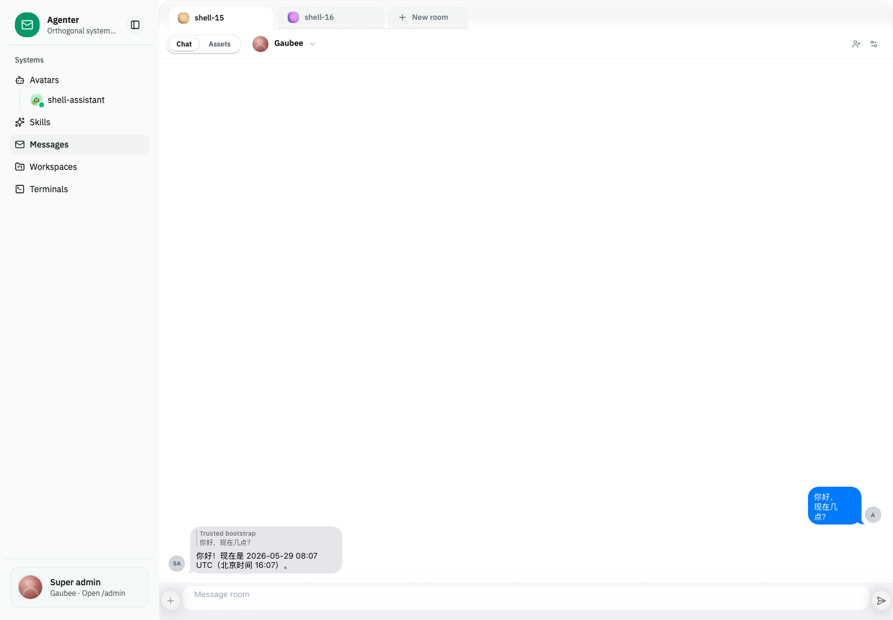
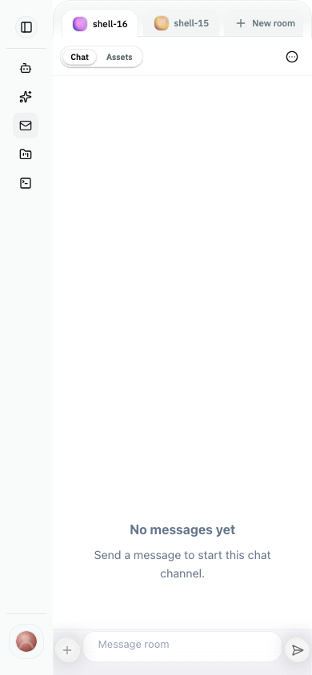

Studio now embeds Web Chat through app-view
Round 4 implements the user-confirmed app-view law: Web Chat is a product surface that can run as a full app or as a partial embedded room view, like Chrome vs Chrome WebView. Studio now loads the room chat through an iframe app-view boundary and keeps superadmin controls outside that boundary.
Exit: pass
Change: fix-studio-web-chat-view-embedding-style
Mode: iframe app-view
URL law: viewer=<contactId>
Architecture Result
Boundary
Studio no longer mounts
WebChatViewHost directly as a product surface. It builds an app-view URL and renders message-room-app-view-frame.
Runtime ownership
The iframe connects to the backend itself. Normal chat state, send, and read acknowledgement flow through app-view and backend state, not through a Studio event bridge.
Terminology
App-view URL and visible copy now use contact language:
viewer=<contactId>. The old viewer-actor query parameter is no longer emitted.
Intent Alignment
| Intent | Evidence | Verdict |
|---|---|---|
| Studio consumes the full Web Chat product shell instead of rebuilding Framework7 chat topology. | Live 4174 screenshot shows iframe src http://127.0.0.1:4293/?mode=room&...&viewer=... and app-view page class review-shell-room-page review-shell-embedded-room-page page. |
Pass |
| Desktop and iPhone 14 both render the embedded chat surface. | Desktop metrics: .messages 1184x846, .messagebar 1180x58. iPhone 14 metrics: .messages 324x692, .messagebar 321x56. |
Pass |
| Studio does not forge iframe-internal chat effects. | Route contract asserts no outer markGlobalRoomRead, sendGlobalRoomMessage, or visible-message replay path remains in the Studio route. |
Pass |
| Round 1/2 CSS work does not become the main architectural answer. | Leaf geometry fixes stay as package guardrails, while the product embedding path is now app-view iframe. | Pass |
Screenshot Evidence


Deviation And Future List
Plain-language deviations
- Rounds 1 and 2 fixed real leaf-geometry risks, but they were not the complete architecture fix.
- The correct product law is app-view iframe embedding; Studio owns superadmin chrome, app-view owns chat.
- The first live verification hit a stale 4292 app-view pointed at the review harness. Isolated 4174/4293 validation used the current daemon proxy and passed.
- Some lower-level WebChat prop/type names still say actor; this change cleans the app-view and Studio boundary, not the entire public WebChat API.
Future tasks
- Add a stable Studio Messages e2e fixture for screenshot verification without relying on current daemon room data.
- Open a separate breaking change if the shared WebChat public API should rename actor-facing types to contact-facing types.
- Polish Studio mobile Messages shell density; the app-view iframe works, but the 66px Studio app rail is a separate Studio IA question.
- Verify non-dev/static Studio hosting with
PUBLIC_WEB_CHAT_VIEW_APP_VIEW_URLonce production app-view deployment shape is available.
Verification Commands
bun run --filter '@agenter/web-chat-view-example' typecheckbun run --filter 'agenter-ext-studio' typecheckbun run --filter '@agenter/web-chat-view-example' test -- test/review-profile-query-contract.test.ts test/review-people-projection-contract.test.tsbun run --filter 'agenter-ext-studio' test:unit -- src/lib/features/messages/message-app-view-url.spec.ts src/lib/features/messages/message-room-route-contract.spec.tsbun agenter studio --dev --web-port 4174plus Playwright screenshots against desktop and iPhone 14.